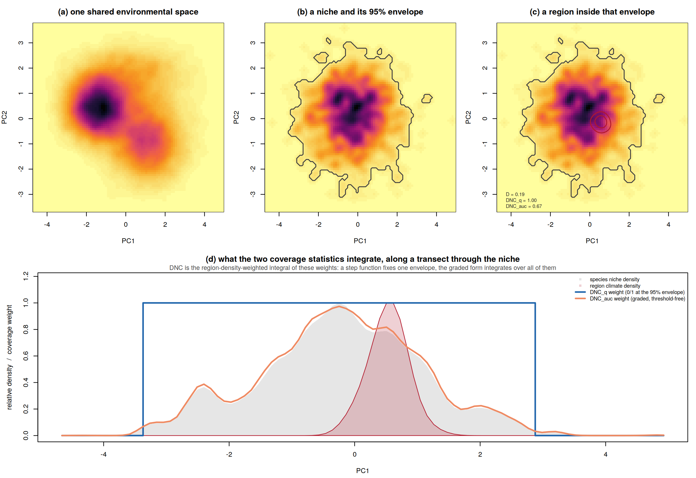
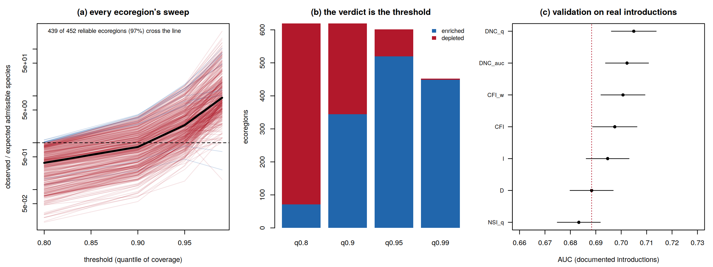

Documentation site: https://ehsanrahimi666.github.io/darkniche/
Which species are absent from a region although its climate is inside their tolerance? darkniche answers that question end to end — and makes the two ways of getting the answer wrong visible in the output instead of hidden in a footnote.
The problem
Climatic dark diversity is the set of species a region could hold but does not. Measuring it requires answering a containment question — is this region’s climate inside this species’ niche? — but the statistics the field uses for niche comparison, Schoener’s D and Warren’s I, are symmetric measures of similarity. They penalise niche mass lying outside the region, so a broad-niched species scores near zero against a small region it could trivially occupy, for the very trait that makes generalists successful colonisers.
The problem is structural, not a matter of tuning: over unit-mass densities the min-overlap functional is identically Schoener’s D, so no symmetric statistic can express containment. darkniche asserts that identity in its own test suite.

In a controlled simulation where admissibility is known from the generating geometry — never from any evaluated statistic — directional coverage recovers it at AUC 0.997 against 0.882 for Schoener’s D (paired DeLong z = 28.1). Thresholded at its own optimum, D over-estimates the size of the admissible pool by 215%; DNC_q errs by 21%.
The diagnostic
The standard region-level test — count species above a similarity threshold, compare with a null expectation — reverses its verdict with the choice of threshold. On the bundled results for all 619 terrestrial ecoregions: 71 ecoregions look enriched at the 80th percentile of the coverage distribution and 449 at the 99th, and 439 of the 452 reliably testable ecoregions (97%) change direction somewhere in between.

dn_sweep() returns a classed object that says so when you print it — computed only from thresholds the test itself considers reliable.
Install
# install.packages("remotes")
remotes::install_github("ehsanrahimi666/darkniche")Not on CRAN — install from GitHub. No hard dependencies beyond base R, so nothing else needs compiling. To build the vignette as well:
remotes::install_github("ehsanrahimi666/darkniche", build_vignettes = TRUE)
vignette("darkniche-quickstart")Check the install worked
Copy-paste this into a fresh R session. Every printed value should match the comment beside it.
library(darkniche)
set.seed(1)
# 1. the bundled global results load, and reproduce the published summary
eco <- dn_data("ecoregion")
nrow(eco) #> 619
round(range(eco$cddr), 3) #> 0.022 0.924
round(cor(eco$cddr, log10(eco$area_km2)), 3) #> -0.441
# 2. the algebraic identity the package rests on: no symmetric statistic can
# express containment, because sum(min(Zs, Ze)) IS Schoener's D
sp <- dn_space(cbind(rnorm(3000), rnorm(3000)), R = 60)
Zs <- rbind(as.numeric(dn_density(cbind(rnorm(800, 0, 1.4),
rnorm(800, 0, 1.4)), sp)))
Ze <- rbind(as.numeric(dn_density(cbind(rnorm(300, 0, 0.25),
rnorm(300, 0, 0.25)), sp)))
m <- dn_metrics(Zs, Ze)
all.equal(as.numeric(m$DNC_min), as.numeric(m$D)) #> TRUE
round(c(D = m$D, DNC_q = m$DNC_q, DNC_auc = m$DNC_auc), 3)
#> D DNC_q DNC_auc
#> 0.149 1.000 0.730
# D is low although the region is habitable throughout; only the directional
# forms say so.
# 3. the diagnostic fires on the real data
dn_direction_census(dn_data("sweep"))$census
#> quantile n_enriched n_depleted
#> 1 0.80 71 548
#> 2 0.90 344 275
#> 3 0.95 520 81
#> 4 0.99 449 3Run the package’s own test suite
R does not install a package’s tests by default, so this needs one extra install flag:
remotes::install_github("ehsanrahimi666/darkniche",
INSTALL_opts = "--install-tests")
testthat::test_package("darkniche")
#> [ FAIL 0 | WARN 0 | SKIP 0 | PASS 162 ]Use
library(darkniche)
# --- the published global results ship with the package --------------------
eco <- dn_data("ecoregion") # 619 ecoregions
rep <- dn_report(eco, dn_data("sweep"))
rep
#> Climatic dark-diversity report
#> regions: 619
#> CDDR: 0.022 - 0.924 (median 0.579)
#> area confound: r = -0.441 -- rank on the residual, never on raw CDDR
#> 286 regions move more than 10% of the ranking when area is removed
#> threshold sweep: 439 of 452 regions (97%) change direction
#> ** a single-threshold enrichment claim is not supportable here **
# --- or run the workflow on your own data ----------------------------------
sp <- dn_space(global_scores, R = 100) # one lattice for everything
Zs <- dn_density(species_scores, sp) # one density per species
Ze <- dn_density(region_scores, sp) # one density per region
m <- dn_metrics(rbind(as.numeric(Zs)), rbind(as.numeric(Ze)))
nul <- dn_null_shift(Zs, rbind(as.numeric(Ze)), dn_density(global_scores, sp))
dn_null_summary(m$DNC_auc, nul)
pairs <- dn_dark(pair_table, p_min = 0.177, ses_cols = c("n1_ses", "n2_ses"))
cddr <- dn_cddr(n_dark, n_present, area) # raw ratio AND area residual
# BEFORE reporting any enrichment result:
sw <- dn_sweep(obs_coverage, null_mean, null_sd)
sw; plot(sw)What it answers
| Question | Function |
|---|---|
| Could this species live in this region, given its climate? | dn_metrics() |
| Is that more than a species of its niche breadth achieves anyway? | dn_null_breadth() |
| Does the result need the niche to sit where it does? | dn_null_shift() |
| Does it need the range to occupy the geography it does? | dn_null_relocate() |
| What coverage value should count as “admissible”? |
dn_match(), dn_calibrate()
|
| Does directional coverage beat niche similarity at predicting establishment? |
dn_auc(), dn_delong()
|
| Which species are absent although the region is admissible? | dn_dark() |
| Which regions hold the largest unrealised pools? |
dn_cddr(), dn_report()
|
| Does this region hold more admissible species than chance allows? | dn_aggregate() |
| Is that answer a property of the region, or of my threshold? | dn_sweep() |
Functions
| Function | Purpose |
|---|---|
dn_space(), dn_density(), dn_moments()
|
shared lattice; fixed-bandwidth kernel densities; niche moments |
dn_envelope(), dn_entryq(), dn_weights()
|
q-envelopes, cumulative density rank, coverage weight vectors |
dn_metrics() |
DNC_q, DNC_auc, NSI_q, CFI, CFI_w, NOV + Schoener’s D, Warren’s I, BC |
dn_null_breadth(), dn_null_shift(), dn_null_relocate()
|
N1 breadth-matched, N2 environmental shift, N3 geographic relocation |
dn_ses(), dn_null_summary()
|
standardised effect sizes with a floored null SD |
dn_match(), dn_auc(), dn_delong(), dn_calibrate()
|
matched negatives, DeLong AUC and paired tests, Youden calibration |
dn_dark(), dn_cddr(), dn_report()
|
conjunction rule, area-adjusted ratio, one-call region report |
dn_aggregate(), dn_sweep(), dn_direction_census()
|
region-level test with reliability flags; the threshold-sweep diagnostic |
dn_data() |
bundled results for all 619 terrestrial ecoregions |
dn_plot_*() (7) |
containment demo, densities, CDDR–area, matrices, sources, ROC, sweeps |
dn_table_extremes(), dn_table_export()
|
paper tables; CSV / Markdown / LaTeX |
Guardrails you cannot switch off
-
dn_aggregate()returnsNAfor the effect size, p-value and enrichment whenever the expected count is below 5 — a 2,000-fold ratio against an expectation of 0.001 species is arithmetic, not evidence. -
dn_cddr()returns the area-adjusted residual beside the raw ratio and documents that raw CDDR must never rank regions. -
dn_sweep()prints its reversal warning from the object itself, so it survives into any report that prints the result.
Data
The package ships no range polygons, ecoregion shapefiles or climate rasters — those are your inputs (IUCN, BirdLife, WWF, WorldClim; all freely downloadable, too large and licence-restricted to bundle). What it does ship is the published output of the global analysis: 619 ecoregions, 35,087 species, 21,718,853 evaluated pairs, so every example and test runs on real results.
Correctness
162 unit tests. 56 of them verify the numerical core against fixtures generated by an independent Python implementation: kernel density estimation to within 2e-7 of scipy.ndimage.gaussian_filter, all twelve metrics to within 5e-6, envelopes and the aggregate test exactly, the environmental-shift null exactly under injected targets. The remaining 106 test behaviour — including that the sweep’s verdict never uses cells the test calls unreliable.
R CMD check passes clean; CI runs on Linux, Windows and macOS.
Documentation
- https://ehsanrahimi666.github.io/darkniche/ — full reference site
-
vignette("darkniche-quickstart")— worked tutorial -
manual/darkniche-manual.pdf— reference manual (28 pp.) -
manuscript/darkniche_MEE_manuscript.docx— the software paper -
analysis/— scripts regenerating every figure and table in the paper -
DESIGN.md— architecture and porting notes